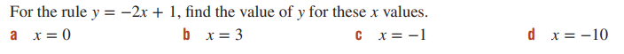

linear equations
- The coordinates of the y-intercept always make x = 0.
- The coordinates of the x-intercept always make y = 0.
equations
slope intercept form
$$y = mx + b$$
y ⇒ the value of y on the point (which is on the line)
m ⇒ the slope of the line / the gradient
x ⇒ the value of x on the point (which is on the line)
b ⇒ the y-intercept (where the line cuts the y axis)
standard form
$$Ax + By - C = 0$$
A ⇒ the slope of the line / the gradient
B ⇒ the y-intercept (where the line cuts the y axis)
C ⇒ the x-intercept (where the line cuts the x axis)
y ⇒ the value of y on the point (which is on the line)
x ⇒ the value of x on the point (which is on the line)
point-slope form
$$y - y_1 = m(x - x_1)$$
y ⇒ the value of y on the point (which is on the line)
m ⇒ the slope of the line / the gradient
x ⇒ the value of x on the point (which is on the line)
midpoint
$$\left(\frac{x_1 + x_2}{2}, \frac{y_1 + y_2}{2}\right)$$
distance
$$\sqrt{(x_2 - x_1)^2 + (y_2 - y_1)^2}$$
gradient
$$m = \frac{\text{rise}}{\text{run}}$$
m ⇒ gradient/slope
rise ⇒ the change in y
run ⇒ the change in x
• run is always positive
• two points are needed to find the gradient
• if you only have one point you can always use the origin point (0, 0) if it's passing through that
Types of Gradients
Positive gradient

Negative gradient
Vertical Gradient
m = undefined
When a line is vertical (straight on the y-axis), its gradient is undefined.

Horizontal Gradient
m = 0
When a line is hor izontal (straight on the x-axis), its gradient is undefined.
all gradients
parallel & perpendicular
parallel
The gradient (m) of two parallel lines are always equal, as shown in this example.

$$m_1 = m_2$$
In the same way this is how it's represented in a formula.
perpendicular


When two lines are perpendicular, their gradients multiply to −1.
$$m_1 m_2 = -1$$
In the same way this is how it's represented in a formula.
example questions
question 1
answer
In this case all you have to do is input the "x" value for each sub-qestion.
a)
$$y = -2x + 1$$
$$y = -2 \times 0 + 1$$
$$y = 1$$
(answer = 1)
b)
$$y = -2x + 1$$
$$y = -2 \times 3 + 1$$
$$y = -6 + 1$$
$$y = -5$$
(answer = -5)
c)
$$y = -2x + 1$$
$$y = -2 \times -1 + 1$$
$$y = 2 + 1$$
$$y = 3$$
(answer = 3)
d)
$$y = -2x + 1$$
$$y = -2 \times -10 + 1$$
$$y = 20 + 1$$
$$y = 21$$
(answer = 21)
question 2
answer
In this case you have to take a value from the point. Placing one value into the equation to see if the same points other value comes out. So lets say if we take "x", the value would be 1 and after putting it thought the equation if "y" is 2 then the point is on the line and if it is not 2 then the point is not on the line.
a)
$$y = x + 1$$
Sub in x
$$y = 1 + 1$$
$$y = 2$$
The value of y is the same as the one in the question so;
answer = Point Is On The Line
b)
$$y = 2x + 1$$
Sub in x
$$y = 2 \times 1 + 1$$
$$y = 3$$
The value of y is the same as the one in the question so;
answer = Point Is Not On The Line
c)
$$y = -x + 3$$
Sub in x
$$y = -1 + 3$$
$$y = 2$$
The value of y is the same as the one in the question so;
answer = Point Is On The Line